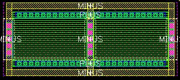
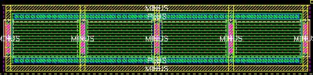

pc number of fingers property
these layouts show the effect of varying the number of fingers properity for an example pc
number of fingers = 1 (default)
number of fingers = 2

number of fingers = 4
